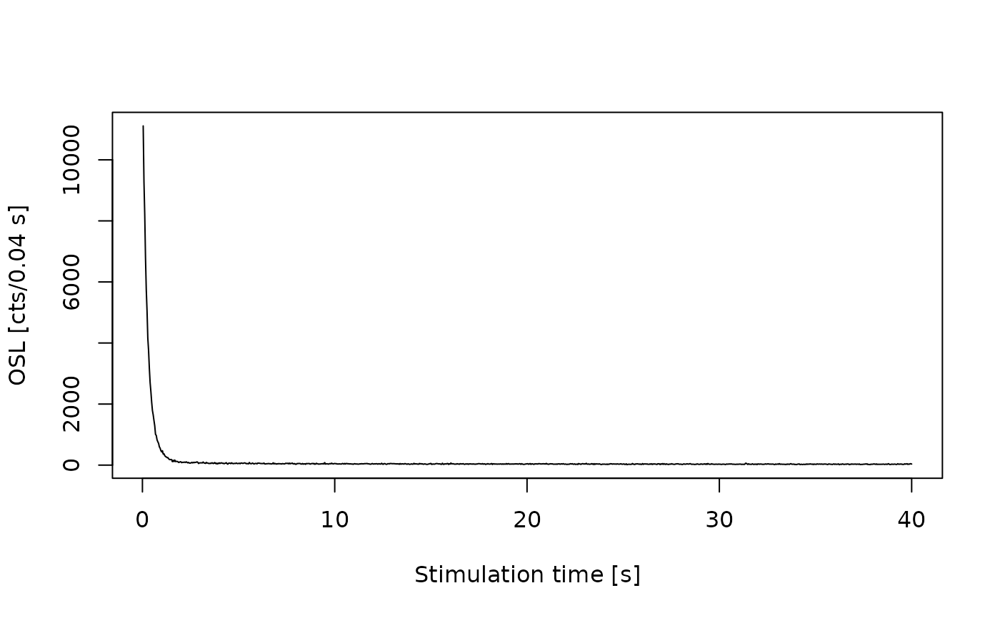
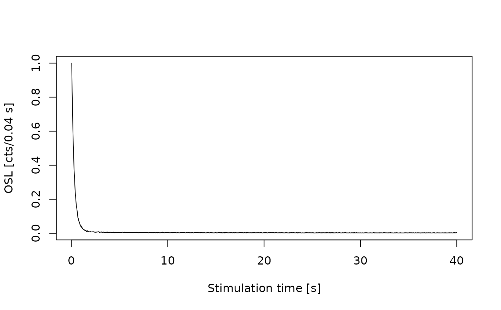

Normalisation of RLum-class objects
Source:R/Luminescence-generics.R, R/RLum.Analysis-class.R, R/RLum.Data.Curve-class.R, and 2 more
normalise_RLum.RdThe function provides a generalised access point for specific
RLum objects. Depending on the input object, the corresponding
function will be selected. The normalisation is performed in the internal
function .normalise_curve().
Usage
normalise_RLum(object, norm = TRUE, ...)
# S4 method for class 'list'
normalise_RLum(object, norm = TRUE, ...)
# S4 method for class 'RLum.Analysis'
normalise_RLum(object, norm = TRUE, ...)
# S4 method for class 'RLum.Data.Curve'
normalise_RLum(object, norm)
# S4 method for class 'RLum.Data.Image'
normalise_RLum(object, norm = TRUE, global = TRUE)
# S4 method for class 'RLum.Data.Spectrum'
normalise_RLum(object, norm = TRUE)Arguments
- object
RLum (required): S4 object of class
RLum- norm
logical character (required): if logical, whether curve normalisation should occur; alternatively, one of
"max"(used withTRUE),"min","first","last","huot","intensity"or a positive number (e.g., 2.2).- ...
further arguments passed to the specific class method
- global
logical (*with default): this defines whether the normalisation is applied globally (same to all) or locally, in which case each frame has its own normalisation. If
global = TRUEthe arguments fornorm = 'first'andnorm = 'last'work as expected and consider either the first or the last frame for the normalisation.Normalise RLum.Data.Image objects to value set via the argument
norm
Details
The norm argument normalises all count values. The following options are
supported:
norm = TRUE or norm = "max": Curve values are normalised to the highest
count value in the curve
norm = "min": Curve values are normalised to the smallest count value
in the curve
norm = "first": Curve values are normalised to the first count value.
norm = "last": Curve values are normalised to the last count value
(this can be useful in particular for radiofluorescence curves)
norm = "huot": Curve values are normalised as suggested by Sébastien Huot
via GitHub:
$$
y = (observed - median(background)) / (max(observed) - median(background))
$$
The background of the curve is defined as the last 20% of the count values of a curve.
norm = "intensity": Curve values are normalised to the channel length.
norm = 2.2: Curve values are normalised to a positive number (e.g., 2.2).
Functions
normalise_RLum(list): Returns a list of RLum.Data objects that had been passed to normalise_RLumnormalise_RLum(RLum.Analysis): Normalisation ofRLum.Datarecords contained in the input object.normalise_RLum(RLum.Data.Curve): Normalise RLum.Data.Curve objects to value set via the argumentnormnormalise_RLum(RLum.Data.Image): Normalise RLum.Data.Image objects to value set via the argumentnorm.normalise_RLum(RLum.Data.Spectrum): Normalise RLum.Data.Spectrum objects to value set via the argumentnorm
Author
Sebastian Kreutzer, F2.1 Geophysical Parametrisation/Regionalisation, LIAG - Institute for Applied Geophysics (Germany) , RLum Developer Team
How to cite
Kreutzer, S., 2026. normalise_RLum(): Normalisation of RLum-class objects. Function version 0.1.2. In: Kreutzer, S., Burow, C., Dietze, M., Fuchs, M.C., Schmidt, C., Fischer, M., Friedrich, J., Mercier, N., Philippe, A., Riedesel, S., Autzen, M., Mittelstrass, D., Gray, H.J., Galharret, J., Colombo, M., Steinbuch, L., Boer, A.d., Bluszcz, A., 2026. Luminescence: Comprehensive Luminescence Dating Data Analysis. R package version 1.2.0. https://r-lum.github.io/Luminescence/
Examples
## load example data
data(ExampleData.CW_OSL_Curve, envir = environment())
## create RLum.Data.Curve object from this example
curve <-
set_RLum(
class = "RLum.Data.Curve",
recordType = "OSL",
data = as.matrix(ExampleData.CW_OSL_Curve)
)
## plot data without and with smoothing
plot_RLum(curve)

plot_RLum(normalise_RLum(curve))
